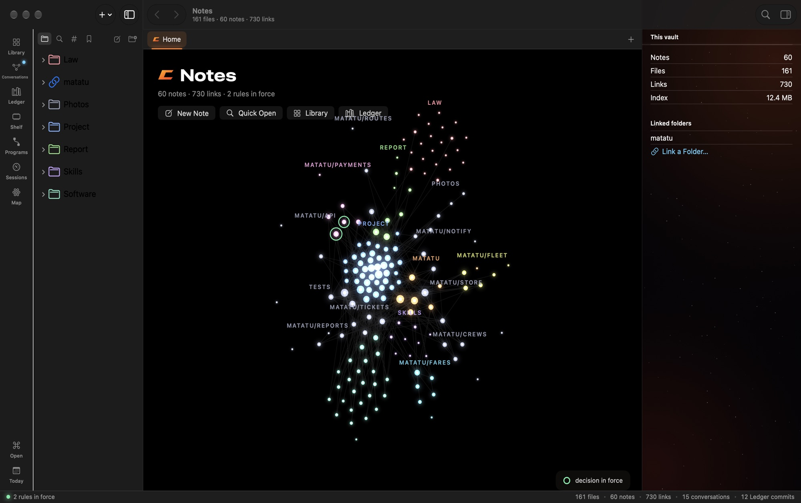
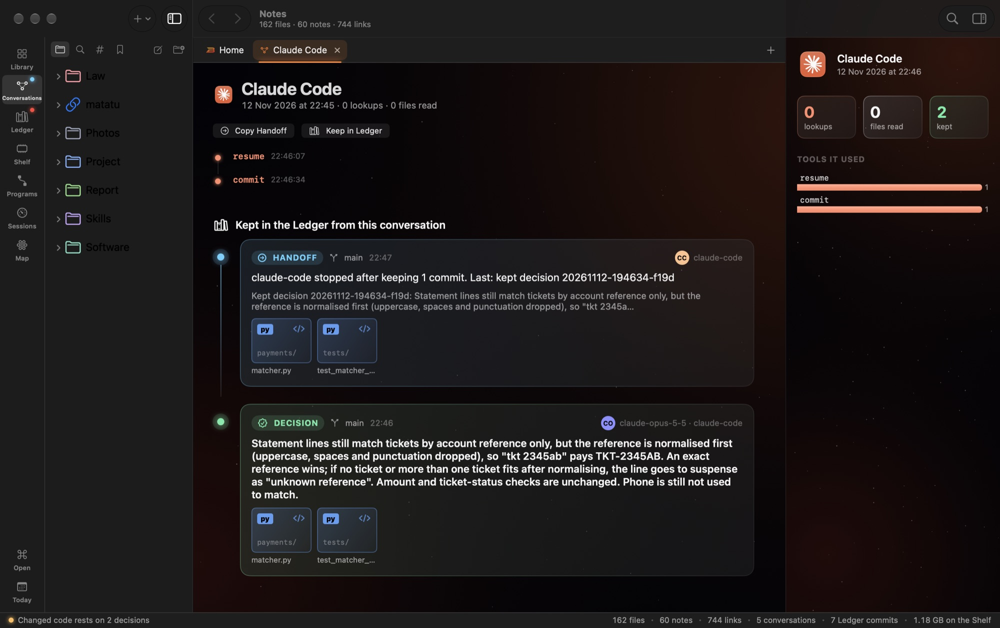
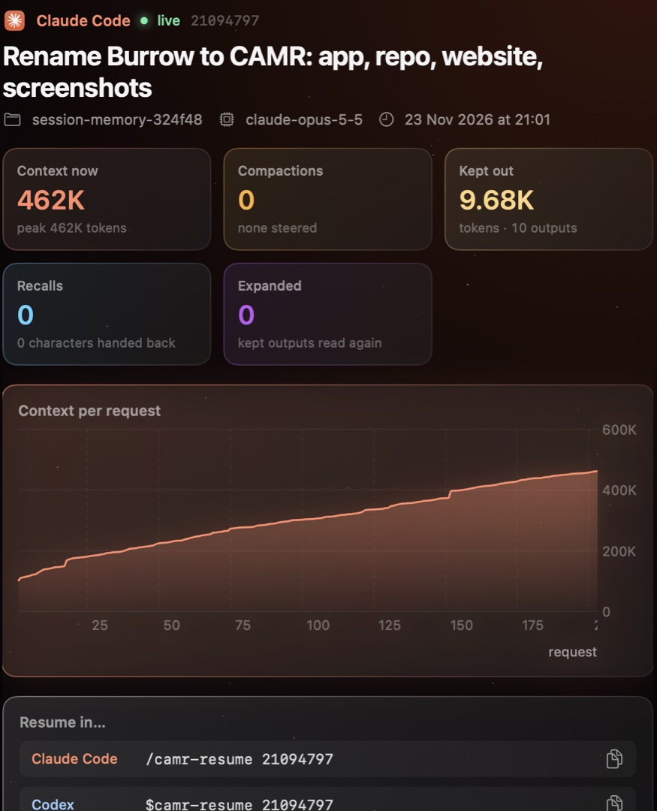

Documentation.
Ten minutes from nothing to an AI program that answers from your notes and keeps your decisions.

Getting started
You need a Mac with Apple silicon. The app needs macOS 26 or later; the camr program and its MCP server need macOS 14 or later. Ollama gives search by meaning and answers on your Mac; without it, search still works by words.
- Install. The app and the
camrprogram, from the download page, or in a terminal:curl -fsSL https://github.com/Satasdin/CAMR/releases/latest/download/install.sh | sh -s -- --appThe installer checks every file against its SHA-256 checksum and stops if one doesn't match. - Models. One for search by meaning, one small chat model for Ask. Any Ollama chat model works; a 12-billion-parameter model such as
gemma4:12banswers better if your Mac has the memory.ollama pull qwen3-embedding:0.6b ollama pull qwen3:4b-instruct-2507-q4_K_M - A vault. Any folder of Markdown notes is a vault, an Obsidian vault as it is. In the app: New Vault… or Open Folder…. In a terminal:
camr vault new ~/NotesCAMR builds its index in~/Notes/.camr. Your files are never changed. - Link your code (optional). The code stays where it is and is only ever read.
camr link ~/Notes ~/code/my-project - Connect a program. In the app, Programs → Connect. In a terminal, this prints what it would set up and writes nothing; run it again with
--writeto do it.camr connect claude-code ~/Notes - Check it works. This shows what a model would read, with file and line, without calling a model. Then ask your program something your notes answer.
camr find ~/Notes "something you wrote about"
The app
Laid out like a notes app you already know: a ribbon of pages on the left, your files beside it, tabs across the top, and a side pane for what belongs to the page. ⌘K opens any file or command.
Home
Your vault as a live map, always the first tab. What a connected program looked up in the last ten minutes glows gold; decisions in force, changed code and steering text wear rings.

Ask
A model on this Mac answers from the vault only, cites file and line, and lists every file it used and the Ledger notes it was given. Open it with ⌘K, Ask Your Vault.

Ledger
Every decision, fact, plan and handoff, with its reason and what was turned down. Still Right, Mark Wrong…, and Resume to see what the next model is handed.

Programs
Which AI programs reach this vault, with their own icons, and what each read today.

Map
The whole vault as one graph, filtered by notes, code and files, or unconnected.

Conversations
Each connection a program made: what it asked, read and kept. Copy Handoff and Keep in Ledger.
- Library
- Every note, document, image and code file as covers, by folder. PDFs, Word, RTF, OpenDocument and images are read in too.
- Sessions
- Your Claude Code and Codex sessions, how full their context is, and the line to resume each one.
- Shelf
- llama.cpp caches kept on disk, so a model starts on material it has already read.
- Settings
- The night-sky theme (Ember, Nebula, Aurora or Tide), the model that answers, and linked folders.
The status bar light is green when nothing needs a look, amber when changed code rests on a decision, and red when the vault holds text written to steer an AI.
Connecting programs
One command sets up claude-code, codex, opencode, openclaw, hermes and n8n. LM Studio, llama.cpp and Ollama work through CAMR's MCP server; other agents, such as Cursor, can follow its AGENTS.md. For AI agents has the setup an agent can follow by itself.
camr connect opencode ~/Notes --write
camr hook install claude ~/Notes
The hooks hand your decisions to Claude Code at the start of a session and keep its exact words when it compacts. To teach Claude Code to resume, keep decisions and answer a held change:
/plugin install camr --marketplace Satasdin/CAMR
Decisions and checks
When you settle something, say so: "Make this the decision and keep it in CAMR, with the reason." The program keeps it in the Ledger with why and what was turned down; CAMR refuses a decision without a reason. Every program that connects is handed the decisions in force from then on.
Before a change is called done, camr_check puts the decisions resting on the changed code beside it, with a verdict for each:
- unaffected: the change left what the decision rests on as it was.
- affected or unprovable: held once, so the decision is seen.
- breaks: the decision's own check failed. Held every time until the change is fixed.
A program that never calls it is still stopped: Claude Code's Stop hook and git's pre-commit hook run the same check.
camr hook install git-gate ~/Notes
When a file a decision rests on changes, the decision is kept and marked check again. Still Right or Mark Wrong… in the app. Nothing is deleted either way.
Sessions
A long Claude Code session fills its context with tool output, compacts, and loses words on the way; a month later its transcript is gone. CAMR looks after both.
- Lean output. A Bash or Grep result over 6,000 characters is kept whole; the model sees its first and last 30 lines, every error line, and a handle to fetch the rest with
camr_expand. Nothing is summarised. (Claude Code only.) - Every session kept. Claude Code and Codex sessions are archived, compressed, in CAMR's own folder, never in the vault.
- Resumed anywhere. A resume pack holds your requests word for word, the decisions, the plan and where it stopped.
/camr-resume <name> # in Claude Code
$camr-resume <name> # in Codex
camr chat ~/Notes --resume <id> # with a local model
camr connect claude-code ~/Notes --write sets all of it up. Sessions, in full

Tools a model gets
A connected program sees a short set of tools, so even a small model uses them well.
- camr_find
- Search by words and meaning, with file and line, and a line saying how much the vault holds on it.
- camr_read
- A file, with the decisions that rest on it.
- camr_resume
- The plan, where the last session stopped and the latest decisions.
- camr_commit
- Keep a decision, fact, plan or handoff, with its reason.
- camr_check
- A verdict for each decision on the current change.
- camr_session
- Resume or search an earlier Claude Code or Codex session.
- camr_expand
- Get back part of a long output CAMR kept whole.
The camr command
camr find ~/Notes "query" # what a model would read
camr ask ~/Notes "question" # answer with a model on this Mac
camr log ~/Notes # what was kept, newest first
camr resume ~/Notes # what the next model is handed
camr check ~/Notes # the gate, by hand
camr vault list # the vaults CAMR knows
camr --version
Privacy and security
- CAMR calls no cloud model. It talks only to Ollama on your own Mac. A cloud AI program you connect talks to its own provider, as it would without CAMR.
- Its only network use is a team folder you join, and downloading a release.
- Your files are never changed or deleted. Linked code is only read.
- Approving a folder, sharing with a team, writing a program's settings and overriding a check refuse to run from an AI program. They need you.
- Text written to steer an AI is flagged and never handed to a program as a rule.
- Keys, tokens and passwords are replaced with
[secret removed]before a session is kept or shared. - CAMR runs on macOS only. It isn't notarised by Apple yet, so a downloaded app asks for Open Anyway once.